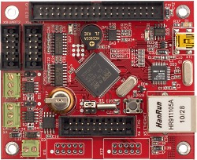

Демонстрационный проект для встраемого модуля TE-STM32F107. Основан на uIP TCP/IP стеке v0.9.
С помощью веб-браузера вы можете управлять светодиодами модуля TE-STM32F107 и наблюдать напряжение на входе 10-го канала АЦП, которое обновляется 1 раз в секунду.
Полная документации по микроконтроллеру STM32F107 доступна на сайте производителя: www.st.com
Следущее окно позволяет управлять светодиодами модуля TE-STM32F107. Для включения светодиода установите галочку, для выключения снимите. Затем нажмите кнопку "Отправить".
В следующем окне вы можете наблюдать за уровнем напряжения на входе 10-го канала АЦП. Изменяя входное напряжение, вы увидите изменения показаний шкалы.